レベルデザイン基礎 演習 H04
第4回：入力と即時反応
2026-11-19
本日の配布物
H04_InputFeedback.unitypackage（作例 Ex01〜Ex08 のシーン、入力の設定ファイル H04Controls.inputactions、8 本のスクリプト）
前回までの DesignPrinciples2026 プロジェクトをそのまま使います。取り込み方は、このページの 1 章の最初に書いています。
今日は、キーやゲームパッドの入力を受け取ってから、画面が反応するまでの流れを Unity で確かめます。押したキーと結果の並びを入れ替えたり、少し遅い・少し早いジャンプを許したり、反応をわざと遅らせたりして、プレイヤーの感じ方がどう変わるかを比べます。
同じ日の講義（D04、原理編 第4章「対応付け・制約・エラー・フィードバック」）で聞いた話を、ここでは自分の手で再現します。章は、これまでと同じく三つの層の順に並べています。
0. はじめに：三つの層と、今日の問い
講義 D01（原理編 第1章）では、ゲームのデザインが扱う範囲を三つの層に分けました。
- 体験の層：操作したときの手応えや迷いにくさ
- 情報の層：何を、どんな順番で、どれくらいの強さで見せるか
- 見た目の層：色、形、レイアウト、フォント
前回の H03 では、ボタンが「押せそう」に見える手がかりを扱いました。今日はその続きで、押した後に何が起きるかを扱います。問いは 1 つで、「操作したことに、どう応えるか」です。
この問いには、講義 D04 の 3 つの言葉が役に立ちます。対応付け（mapping）は、操作するものと結果との対応関係のことです。左のキーで左のランプが光るなら、説明は要りません。
許し（forgiveness）は、プレイヤーの小さな間違いを吸収する調整です。フィードバック（feedback）は、操作に対してシステムが返す反応で、速く・分かりやすく・操作に見合った強さで返すのがよいとされています。
配布シーンの Ex 番号は、Unity で作業しやすい順に付けています。今日はたまたま、層の順と Ex 番号の順がそろっています。
1. 準備：入力を受け取る仕組み
層の話に入る前に、配布物を取り込み、キーを押してからスクリプトが動くまでの道筋を確かめます。今日の作例は、どれもこの道筋で入力を受け取っています。
配布物を取り込む
配布の unitypackage を、H01 で作った DesignPrinciples2026 プロジェクト（Universal 3D のテンプレート）に取り込みます。H03 と同じ手順です。
手順
- Classroom の課題から
H04_InputFeedback.unitypackageをダウンロードします - Unity で DesignPrinciples2026 プロジェクトを開きます
- メニューバーの Assets → Import Package → Custom Package... をクリックします
- 開いたウィンドウで、ダウンロードした
H04_InputFeedback.unitypackageを選んで開きます - 取り込む中身の一覧が出たら、すべてにチェックが入っていることを確かめ、右下の Import をクリックします
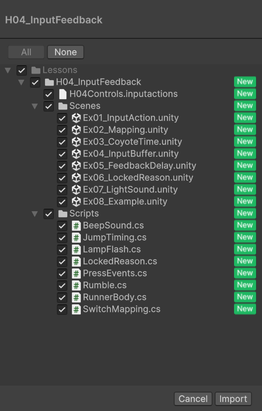
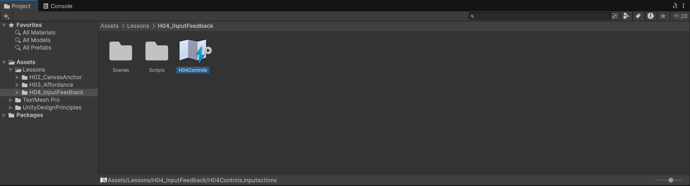
Assets/Lessons/H04_InputFeedback/ に入ります確認：Project ウィンドウの Assets/Lessons/H04_InputFeedback/Scenes に Ex01_InputAction から Ex08_Example までの 8 つのシーンがあり、同じフォルダに H04Controls があることを確認します。
シーンを開いて文字が出ないときは、TextMeshPro の部品が足りていません。メニューバーの Window → TextMeshPro → Import TMP Essential Resources をクリックし、開いたウィンドウで Import を押します（H03 で済ませていれば不要です）。
Space でランプを光らせる
Assets/Lessons/H04_InputFeedback/Scenes/Ex01_InputAction.unity ／ PlayerInput
Space キーを押すと、画面の真ん中のランプが黄色に光り、約 0.3 秒で元の暗い色に戻ります。
使うもの
- Input System：キーボードやゲームパッドの操作を、「アクション（Action）」という名前の付いたやりたいことに結び付ける、Unity の入力の仕組みです
- H04Controls：どのキーがどのアクションになるかを書いた、入力の設定ファイル（Input Actions アセット）です
- Player Input：H04Controls を使って入力を受け取り、スクリプトへ届けるコンポーネントです
- PressEvents.cs：届いた入力を、Inspector に登録した処理（ここではランプを光らせる処理）に流すスクリプトです
手順
- Project ウィンドウで
Assets/Lessons/H04_InputFeedback/Scenes/Ex01_InputActionをダブルクリックして開きます - Play ボタン（Cmd + P、Windows は Ctrl + P）を押します
- Game ビューを 1 回クリックしてから、Space を数回押します
- もう一度 Play ボタンを押して止めます
- Hierarchy で
PlayerInputをクリックし、Inspector に並ぶ 2 つのコンポーネントを見ます - Project ウィンドウで
H04Controlsをダブルクリックし、開いた「H04Controls (Input Actions Editor)」のウィンドウで、アクションの一覧を見ます（H04Controls を選んだときの Inspector にある Edit Asset ボタンでも開けます）
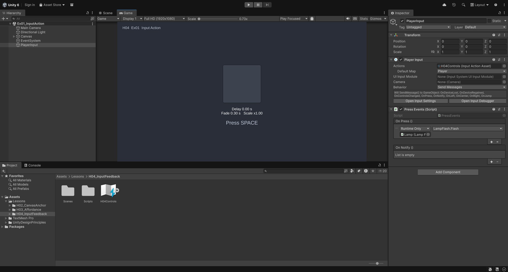
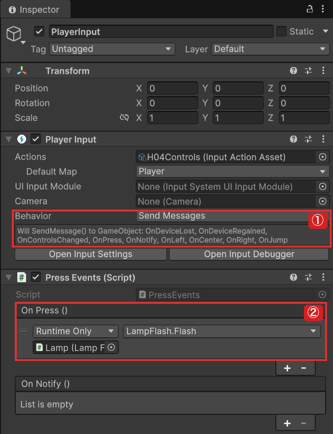
| 欄 | 値 | 意味 |
|---|---|---|
| Player Input の Actions | H04Controls (Input Action Asset) | 使う入力の設定ファイルです |
| Player Input の Default Map | Player | 最初に有効にするアクションの組（Action Map）です |
| Player Input の Behavior | Send Messages | スクリプトへの届け方です。選択肢は Send Messages・Broadcast Messages・Invoke Unity Events・Invoke C Sharp Events の 4 つで、今日は Send Messages だけを使います |
| Press Events の On Press () | Runtime Only ／ LampFlash.Flash（対象は Lamp） | Space（Press アクション）が押されたときに呼ぶ処理の一覧です。Button の On Click () と同じ形をしています |
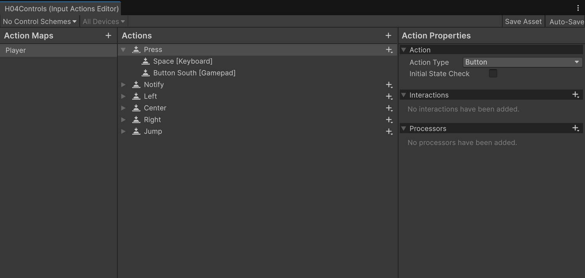
確認：Space を押した瞬間にランプが光り、約 0.3 秒で暗い色に戻ることを確認します。PlayerInput の Inspector で、Behavior が Send Messages、On Press () に Lamp の LampFlash.Flash が登録されていることも見ておきます。
Space を押しても光らないときは、Game ビューを 1 回クリックします。Unity は、Game ビューが選ばれているときだけキーの入力をゲームに渡すためです。
スクリプトは「Space」を知らない
H04Controls には、Player という組の中に 6 つのアクションがあります。キー（やパッドのボタン）とアクションを結ぶ線をバインド（binding）と呼びます。
| アクション | キーボード ／ ゲームパッド | 使う作例 |
|---|---|---|
| Press | Space ／ 下のボタン（Button South） | Ex01・Ex05・Ex07 |
| Notify | N ／ 上のボタン（Button North） | Ex07 |
| Left | A、← ／ 十字キーの左 | Ex02 |
| Center | S、↓ ／ 十字キーの下 | Ex02 |
| Right | D、→ ／ 十字キーの右 | Ex02 |
| Jump | Space ／ 下のボタン（Button South） | Ex03・Ex04・Ex08 |
Behavior が Send Messages のとき、Player Input はアクションが押されるたびに、同じ GameObject にあるスクリプトから「On + アクション名」という名前のメソッドを探して呼びます。Press アクションなら OnPress、Jump アクションなら OnJump です。
呼ばれる名前は、Inspector でも確かめられます。Behavior の下に出る「Will SendMessage() to GameObject: … OnPress, OnNotify, OnLeft, OnCenter, OnRight, OnJump」が、その一覧です。H04Controls の 6 つのアクションが、そのまま「On + アクション名」になって並んでいます（先頭の OnDeviceLost などの 3 つは、コントローラーが外れたときなどに呼ばれる名前です）。
- Space を押す
- →
- H04Controls の Press
- →
- Player Input（Send Messages）
- →
- PressEvents の
OnPress - →
- On Press () の一覧
- →
- Lamp の
Flash
スクリプトが知っているのは「Press」という名前だけで、どのキーかは H04Controls だけが知っています。そのため、キーを変えたいときも、パッドで遊べるようにしたいときも、スクリプトを書き直さずに H04Controls のバインドを変えるだけで済みます。実際、ゲームパッドをつなぐと、パッドの下のボタンが Space と同じ働きをします。
PressEvents.cs の全文です。配布物に入っているので書き写す必要はありませんが、要所の意味を読んでおきましょう。
using UnityEngine;
using UnityEngine.Events;
using UnityEngine.InputSystem;
/// Player Input（Behavior = Send Messages）から届いた入力を、Inspector の一覧（UnityEvent）に流す。
/// Button の On Click () と同じように、押したときに呼ぶ処理を Inspector で登録できる。
/// - On Press () : Press アクション（Space キー）
/// - On Notify (): Notify アクション（N キー）
[RequireComponent(typeof(PlayerInput))]
public class PressEvents : MonoBehaviour
{
public UnityEvent onPress;
public UnityEvent onNotify;
// メソッド名は「On + アクション名」。Player Input が名前で探して呼ぶ
void OnPress(InputValue value)
{
onPress.Invoke();
}
void OnNotify(InputValue value)
{
onNotify.Invoke();
}
}| 部分 | していること |
|---|---|
using UnityEngine.InputSystem; | Input System の部品（PlayerInput や InputValue）を使えるようにします |
[RequireComponent(typeof(PlayerInput))] | このスクリプトを付けると、同じ GameObject に Player Input も必ず付くようにします。入力を受ける部品とセットで使うためです |
public UnityEvent onPress; / onNotify; | Inspector に並べる処理の一覧です。Inspector では On Press () と On Notify () と表示されます |
void OnPress(InputValue value) | 名前が「On + アクション名」なので、Press アクションが押されたときに Player Input から呼ばれます |
onPress.Invoke(); | 一覧に登録した処理を、上から順に全部呼びます。Ex01 ではランプの Flash、Ex07 では光・音・揺れの 3 つです |
void OnNotify(InputValue value) | Notify アクション（N キー）用の受け口です。Ex07 で使います |
InputValue value | 押した値が入っています。今日のボタンのアクションでは使いません |
Ex03・Ex04・Ex08 では、Player Input は Canvas の外ではなく、跳ぶ四角（Player）そのものに付いています。受け口の OnJump を持つスクリプトが、同じ GameObject にある必要があるからです。
Fade Time を 1 にする
Assets/Lessons/H04_InputFeedback/Scenes/Ex01_InputAction.unity ／ Canvas / Lamp
前の作例と同じランプの、消えるまでの秒数だけを 0.3 から 1 に変えます。光り始めは同じまま、約 1 秒かけてゆっくり消えるようになります。
使うもの
- LampFlash.cs：
Flash()を呼ばれると光り、決めた秒数をかけて元の色に戻すスクリプトです - Fade Time：光ってから元の色に戻るまでの秒数です
手順
- Play が止まっていることを確かめます
- Hierarchy で
Canvasの左の三角をクリックして開き、Lampをクリックします - Inspector の Lamp Flash の Fade Time に
1を入力し、Enter で確定します - Play ボタン（Cmd + P、Windows は Ctrl + P）を押し、Game ビューを 1 回クリックしてから Space を押します
- 確かめたら、Play ボタンを押して止めます
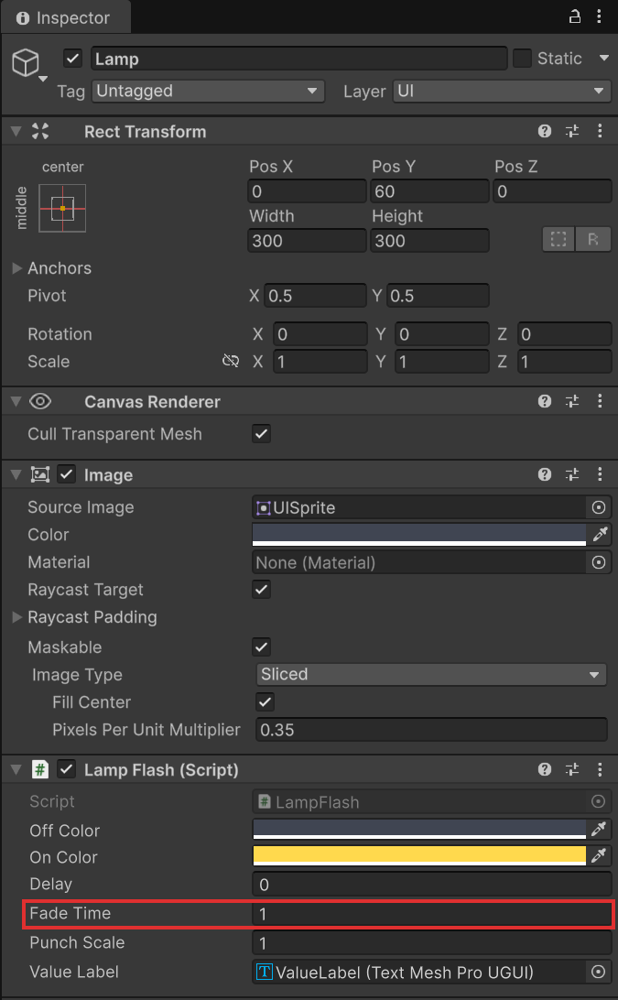
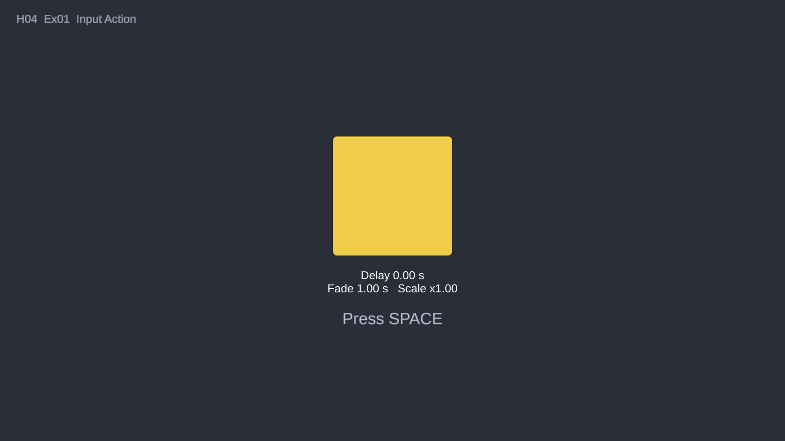
確認：ランプの下の表示が「Fade 1.00 s」に変わり、Space を押すと、光った後に約 1 秒かけてゆっくり消えることを確認します。押した瞬間に光る点は、変更前と同じです。
Play 中に Inspector で変えた値は、Play を止めると Play する前の値に戻ります。今日の作例では、値は Play を止めてから変え、もう一度 Play して確かめます。Play 中に変えた値を残したいときは、止める前に数字を書き留めておきましょう。
Fade Time を変えても、光り始めは変わらない
LampFlash は、光った時刻からの経過を Fade Time で割って、色を黄色から暗い色へ少しずつ戻しています。Fade Time が 0.3 なら 0.15 秒後に、1 なら 0.5 秒後に、黄色と暗い色のちょうど中間の色になります。
変わるのは消え方（尾の長さ）だけで、光り始める時刻は Delay（光り始めるまでの遅れ）が決めています。Delay は 0 のままなので、どちらも押したフレームで光ります。Delay は 3 章の Ex05 で使います。
LampFlash.cs の全文です。Ex01・Ex02・Ex05・Ex07・Ex08 のランプは、すべてこのスクリプトで光っています。
using TMPro;
using UnityEngine;
using UnityEngine.UI;
/// Flash() を呼ぶと光り、fadeTime 秒かけて元の色に戻るランプ。
/// - delay : Flash() から光り始めるまでの遅れ（秒）。0 なら押したフレームで光る
/// - punchScale : 光った瞬間の大きさ（1 で拡大なし、1.15 で 15% 大きく）
/// - valueLabel : 入れておくと、delay・fadeTime・punchScale の今の値を表示する
[RequireComponent(typeof(Image))]
public class LampFlash : MonoBehaviour
{
public Color offColor = new Color(0.25f, 0.27f, 0.32f);
public Color onColor = new Color(1f, 0.85f, 0.3f);
public float delay = 0f;
public float fadeTime = 0.3f;
public float punchScale = 1f;
public TMP_Text valueLabel;
Image _image;
float _litAt = -99f; // 光った時刻
float _pendingAt = -1f; // 光る予定の時刻（-1 = 予定なし）
void Awake()
{
_image = GetComponent<Image>();
_image.color = offColor;
}
public void Flash()
{
_pendingAt = Time.time + delay;
}
void Update()
{
if (_pendingAt >= 0f && Time.time >= _pendingAt)
{
_litAt = Time.time;
_pendingAt = -1f;
}
// t は 1（光った直後）から 0（消えた）へ減っていく
float t = 1f - Mathf.Clamp01((Time.time - _litAt) / Mathf.Max(fadeTime, 0.01f));
_image.color = Color.Lerp(offColor, onColor, t);
transform.localScale = Vector3.one * Mathf.Lerp(1f, punchScale, t);
if (valueLabel != null)
valueLabel.text = $"Delay {delay:0.00} s\nFade {fadeTime:0.00} s Scale x{punchScale:0.00}";
}
}| 部分 | していること |
|---|---|
offColor / onColor | 消えているときの暗い灰色と、光ったときの黄色です |
delay / fadeTime / punchScale | 光り始めるまでの遅れ、消えるまでの秒数、光った瞬間の大きさです。Inspector では Delay、Fade Time、Punch Scale と表示されます |
public void Flash() | 光る予定の時刻を「いま + delay」にします。On Press () などから呼ばれるのはこのメソッドです |
if (_pendingAt >= 0f && Time.time >= _pendingAt) | 予定の時刻が来たら、その時刻を光った時刻として覚えます。delay が 0 なら、Flash() と同じフレームで光ります |
float t = 1f - Mathf.Clamp01(...) | 光った直後は 1、fadeTime 秒たつと 0 になる数を作ります |
Color.Lerp(offColor, onColor, t) | t が 1 なら黄色、0 なら暗い灰色、その間は混ぜた色にします |
Mathf.Lerp(1f, punchScale, t) | 光った瞬間だけ punchScale 倍に大きくし、t と一緒に元の大きさへ戻します。1 なら大きさは変わりません |
valueLabel.text = ... | いまの Delay・Fade・Scale を画面に表示します。Inspector で値を変えると、表示もすぐ変わります |
2. 体験の層：思ったとおりに動くか
この層で守るのは、プレイヤーが思ったとおりにゲームが動くことです。左を押したつもりが右が動いた、確かに押したのにジャンプが出なかった、という場面では、プレイヤーは自分の操作を信じられなくなります。
この章では、まずキーと結果の並び（対応付け）を入れ替えて、迷いが増えることを確かめます。続けて、少し遅いジャンプと少し早いジャンプを許す 2 つの値を入れます。
キーとランプの並びを入れ替える
Assets/Lessons/H04_InputFeedback/Scenes/Ex02_Mapping.unity ／ PlayerInput
前の作例のランプを 3 つ横に並べ、A・S・D のキーで光らせるゲームにしました。白い印の下のランプを光らせると Hit、違うランプを光らせると Miss が増えます。Crossed をオンにすると、キーとランプの対応が入れ替わります。
使うもの
- Left・Center・Right のアクション：A・S・D（矢印キーの ←・↓・→ でも可）です
- SwitchMapping.cs：どのキーでどのランプを光らせるかを決め、Hit と Miss を数えるスクリプトです
- Crossed：オンにすると、対応が A は右、S は左、D は中に入れ替わるチェックです
手順
- Project ウィンドウで
Ex02_Mappingをダブルクリックして開きます - Play ボタン（Cmd + P、Windows は Ctrl + P）を押し、Game ビューを 1 回クリックします
- 白い印の下のランプに合うキー（左は A、中は S、右は D）を、10 回ほど押します
- 画面下の Hit と Miss を見てから、Play を止めます
- Hierarchy で
PlayerInputをクリックします - Inspector の Switch Mapping の Crossed をクリックして、チェックを入れます
- Play を押し、Game ビューを 1 回クリックしてから、同じように 10 回ほど押します。確かめたら止めます
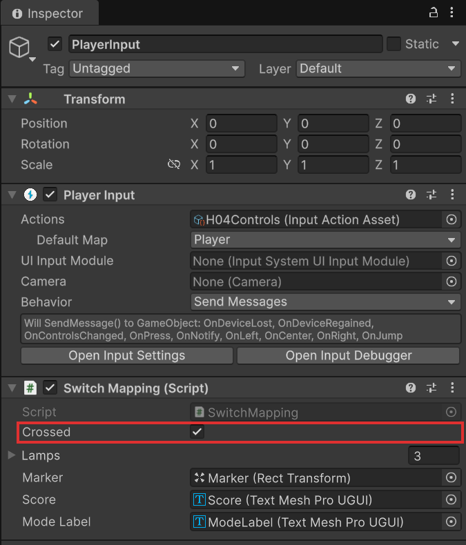
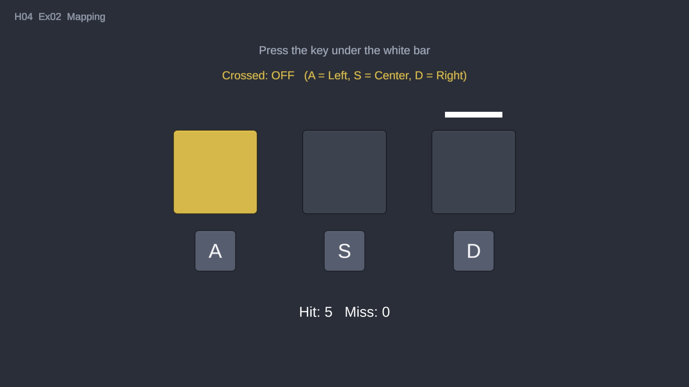
確認：上の表示が「Crossed: OFF」から「Crossed: ON (A = Right, S = Left, D = Center)」に変わり、同じ回数を押しても Miss が増えることを確認します。押す前に「どのキーだったか」と考える時間が増えることにも注目します。
並びがずれると、覚えるのはプレイヤーになる
画面の A・S・D のキーの絵は、ランプと同じ横の位置（左から −360、0、360）に置いています。Crossed がオフのときは、見た位置のキーを押せば当たるので、覚えることがありません。
Crossed をオンにしても、機能は同じで、3 つのランプはどれも光らせられます。変わったのは、対応を覚える手間をプレイヤーが払うようになったことです。講義 D04 では、良い対応付けは覚える必要そのものを消し、悪い対応付けは覚えるコストをプレイヤーに押しつける、と整理しました。
SwitchMapping.cs の全文です。
using TMPro;
using UnityEngine;
using UnityEngine.InputSystem;
/// A / S / D キーと、左・中・右の 3 つのランプの対応付け。
/// 印（marker）の下のランプを光らせるつもりでキーを押し、当たり（Hit）と外れ（Miss）を数える。
/// crossed をオンにすると、キーとランプの対応が入れ替わる（A→右、S→左、D→中）。
[RequireComponent(typeof(PlayerInput))]
public class SwitchMapping : MonoBehaviour
{
public bool crossed = false;
public LampFlash[] lamps; // 左・中・右の順
public RectTransform marker; // いま光らせたいランプの上に出る印
public TMP_Text score;
public TMP_Text modeLabel; // いまの対応付けを表示する
static readonly int[] CrossedMap = { 2, 0, 1 }; // キーの番号 → ランプの番号
int _target, _hit, _miss;
void Start()
{
NextTarget();
}
void Update()
{
modeLabel.text = crossed
? "Crossed: ON (A = Right, S = Left, D = Center)"
: "Crossed: OFF (A = Left, S = Center, D = Right)";
}
void OnLeft(InputValue value) { Press(0); }
void OnCenter(InputValue value) { Press(1); }
void OnRight(InputValue value) { Press(2); }
void Press(int key)
{
int lamp = crossed ? CrossedMap[key] : key;
lamps[lamp].Flash();
if (lamp == _target)
_hit++;
else
_miss++;
NextTarget();
}
void NextTarget()
{
// 直前と同じランプが続かないように、1〜2 個ずらす
_target = (_target + Random.Range(1, lamps.Length)) % lamps.Length;
var p = marker.anchoredPosition;
p.x = ((RectTransform)lamps[_target].transform).anchoredPosition.x;
marker.anchoredPosition = p;
score.text = $"Hit: {_hit} Miss: {_miss}";
}
}| 部分 | していること |
|---|---|
public bool crossed = false; | Inspector の Crossed です。オンにすると対応が入れ替わります |
public LampFlash[] lamps; | 左・中・右の 3 つのランプです。0 番が左、1 番が中、2 番が右です |
static readonly int[] CrossedMap = { 2, 0, 1 }; | Crossed のときの対応表です。キーの 0 番（A）は 2 番（右）、1 番（S）は 0 番（左）、2 番（D）は 1 番（中）を光らせます |
void OnLeft / OnCenter / OnRight | Left・Center・Right のアクションの受け口です。それぞれキーの番号 0・1・2 で Press を呼びます |
int lamp = crossed ? CrossedMap[key] : key; | Crossed がオフならキーと同じ番号、オンなら対応表の番号のランプを選びます |
if (lamp == _target) _hit++; else _miss++; | 光らせたランプが白い印の下なら Hit、違えば Miss を 1 増やします |
NextTarget() | 次に光らせるランプを選び、白い印をその上へ動かして、Hit と Miss を表示します。Random.Range(1, lamps.Length) で 1〜2 個ずらすので、同じランプが続きません |
modeLabel.text = crossed ? ... | いまの対応付けを、画面の上に毎フレーム表示します |
端を過ぎてからのジャンプを許す（コヨーテタイム）
Assets/Lessons/H04_InputFeedback/Scenes/Ex03_CoyoteTime.unity ／ Canvas / Stage / Player
前の作例では、キーとランプの対応を扱いました。今度は 1 つのキー（Space）を押すタイミングを扱います。
青い四角が右へ自動で歩くので、Space で隙間を跳び越えます。足場の端を過ぎて落ち始めてから押したジャンプを、何秒まで許すかを Coyote Time で決めます。
使うもの
- Player：毎秒 500 px で右へ歩き、Space で跳ぶ青い四角です。Player Input、RunnerBody.cs、JumpTiming.cs が付いています
- JumpTiming.cs：Space が押されたときに、いま跳んでよいかを決め、結果を画面の Log に出すスクリプトです
- コヨーテタイム（Coyote Time）：足場の端を過ぎた後も、ジャンプを受け付ける秒数です
- RunnerBody.cs：四角を歩かせ、跳ばせ、落ちたかゴールしたかを数える動きの土台です。中身は読まなくてかまいません
手順
- Project ウィンドウで
Ex03_CoyoteTimeをダブルクリックして開きます - Hierarchy で
Canvasの左の三角を開き、続けてStageの左の三角を開いて、Playerをクリックします - Inspector の Jump Timing で、Coyote Time が
0であることを確かめます - Play ボタン（Cmd + P、Windows は Ctrl + P）を押し、Game ビューを 1 回クリックします
- 四角が足場の端を過ぎて落ち始めたら、すぐに Space を押します。画面上の Log と Result を見てから、Play を止めます
Playerが選ばれたまま、Jump Timing の Coyote Time に0.1を入力し、Enter で確定します- Play を押し、Game ビューを 1 回クリックしてから、さっきと同じように端を過ぎて落ち始めたらすぐ Space を押します。何度か試したら止めます
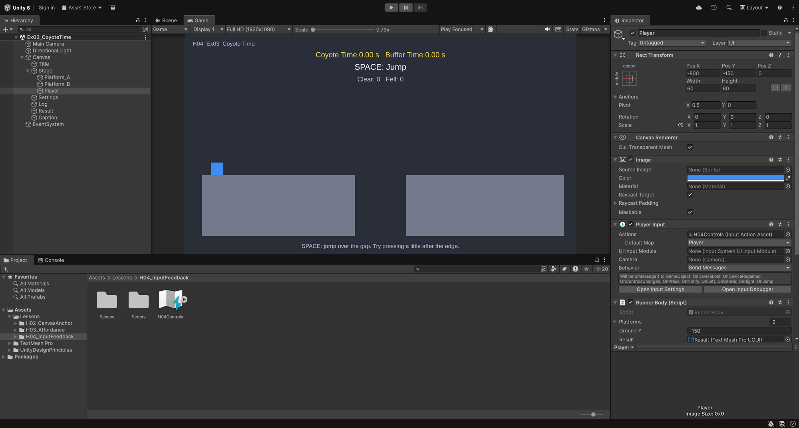
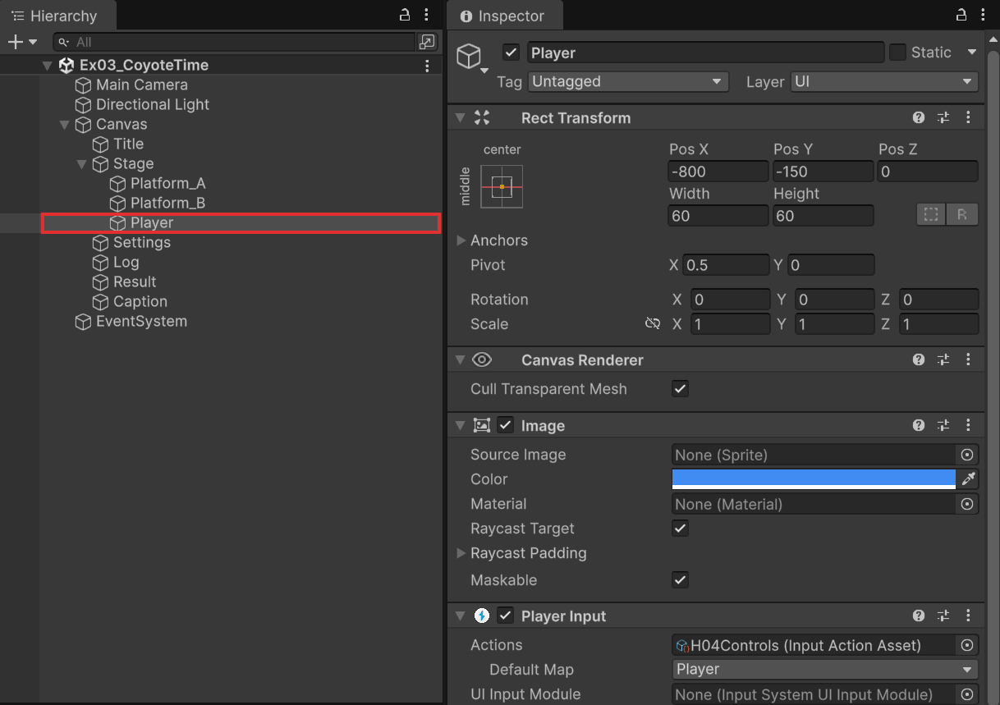
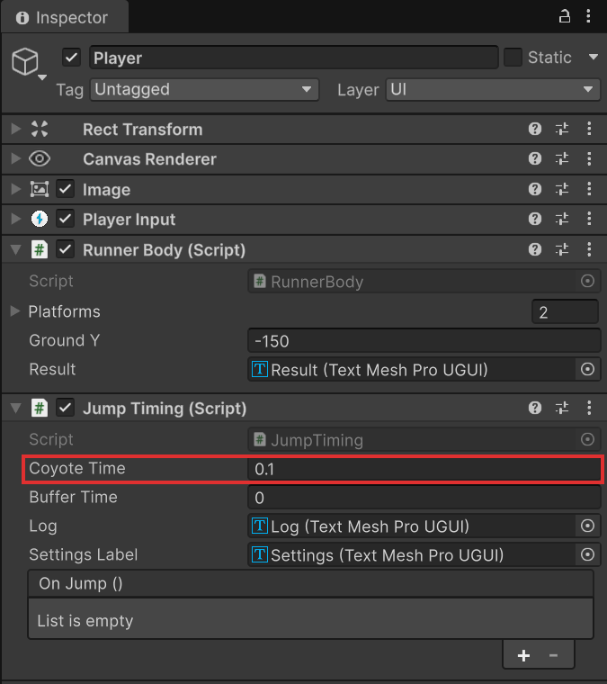
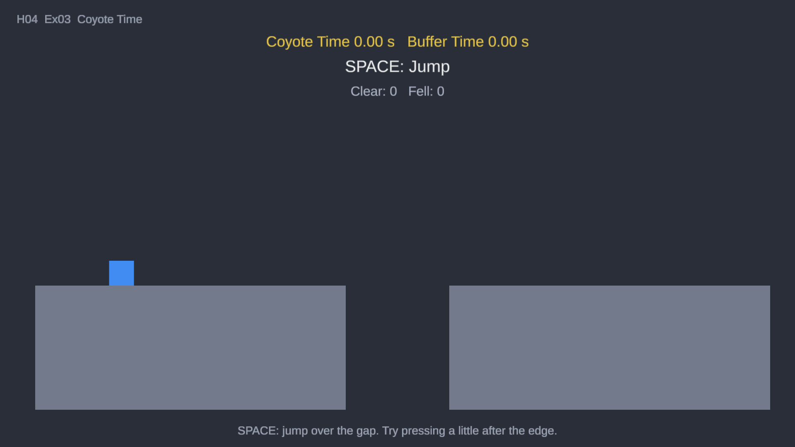
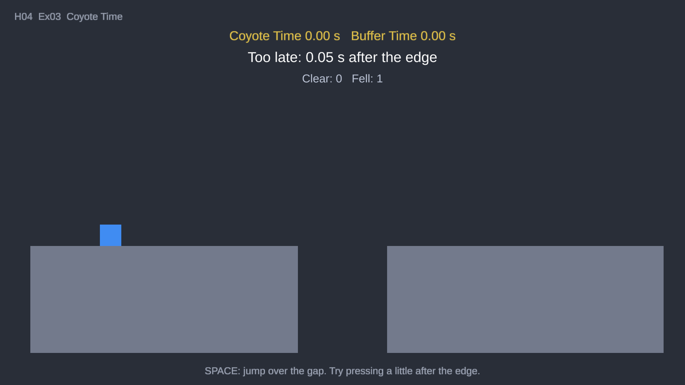
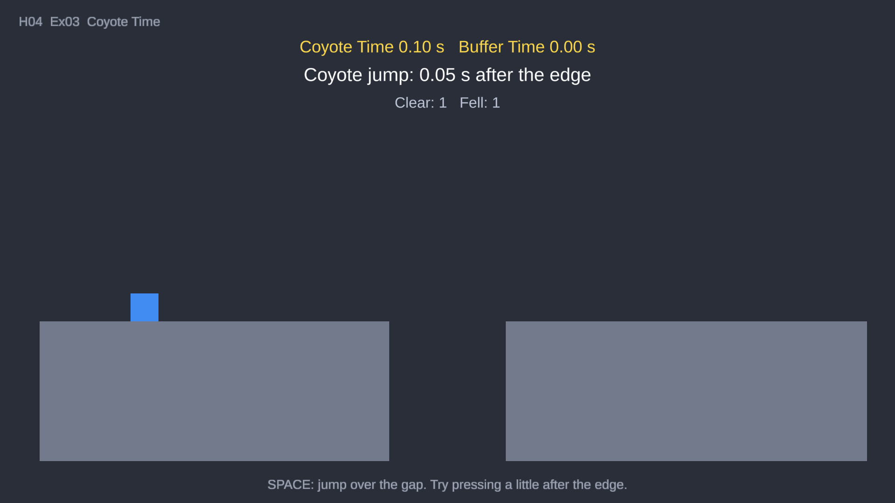
確認：Coyote Time が 0 のとき、端を過ぎて 0.05 秒後に押すと Log に「Too late: 0.05 s after the edge」と出て、四角は落ち、Result の Fell が 1 増えることを確認します。0.1 にすると、同じ押し方で「Coyote jump: 0.05 s after the edge」と出て渡れ、Clear が 1 増えます（数字は押したタイミングで変わります）。
| Log の表示 | 意味 |
|---|---|
| Jump | 足場の上で押した、ふつうのジャンプです |
| Coyote jump: 0.05 s after the edge | 端を過ぎた後で押しましたが、Coyote Time の内側だったので跳べました |
| Too late: 0.05 s after the edge | Coyote Time を過ぎていたので、跳べませんでした |
Log の数字は、端を過ぎてから押すまでに何秒たっていたかです。画面の一番上には「Coyote Time 0.10 s Buffer Time 0.00 s」のように、いまの値が出ます。
判定は 1 フレームごとに行われるので、動きの遅い PC では、ぎりぎりのタイミングの結果が最大 1 フレーム（約 0.03 秒）ぶれます。また Log の秒数は小数 2 桁に丸めて表示しているので、「Coyote Time 0.10 s」なのに「Too late: 0.10 s after the edge」と出ることがあります。このときの実際の値は、0.100 秒をわずかに超えています。
0.1 秒は 50 px ぶんの許し
四角は毎秒 500 px で歩くので、0.1 秒は 50 px 歩く時間です。Coyote Time 0.1 は、端を過ぎて 50 px 進むまでは、まだ足場の上にいるのと同じようにジャンプを受け付ける、という意味になります。
Windows の Unity で、キーを押す操作をプログラムから送り、押すタイミングを変えて試した結果が次の表です。0.1 秒の内側の 0.03 秒と 0.08 秒だけが、Coyote Time 0.1 で救われています。
| Space を押したタイミング | Coyote Time 0 | Coyote Time 0.1 |
|---|---|---|
| 端の上（足場の上） | Jump → Clear | Jump → Clear |
| 端を 0.03 秒過ぎて | Too late → Fell | Coyote jump → Clear |
| 端を 0.08 秒過ぎて | Too late → Fell | Coyote jump → Clear |
| 端を 0.12 秒過ぎて | Too late → Fell | Too late → Fell |
コードの値から計算すると、ジャンプは約 0.8 秒の間に約 400 px 進み、隙間は 250 px です。足場の上で跳んで向こうに届くのは、端の手前 150 px（0.3 秒）の間に押したときだけで、Coyote Time 0.1 はこの 0.3 秒の後ろに 0.1 秒を足しています。
プレイヤーから見ると、端ぎりぎりで押したつもりのジャンプは、実際には端を少し過ぎていることがよくあります。コヨーテタイムは、その小さなずれをミスにしないための値です。
着地より前のジャンプを覚えておく（入力バッファ）
Assets/Lessons/H04_InputFeedback/Scenes/Ex04_InputBuffer.unity ／ Canvas / Stage / Player
前の作例のコースに、狭い足場を 1 つ足して、足場を 3 つにしました。Coyote Time は 0.1 のままです。今度は遅いジャンプではなく、着地する少し前に押した早いジャンプを、何秒まで覚えておくかを Buffer Time で決めます。
使うもの
- Platform_A・Platform_B・Platform_C：左から 1 つ目、真ん中、3 つ目の足場です。真ん中は幅 300 px で、歩くと 0.6 秒で渡り切ります。真ん中と 3 つ目の間の隙間は 50 px です
- 入力バッファ（Buffer Time）：着地より前に押したジャンプを覚えておき、着地の瞬間に跳ばせる秒数です
手順
- Project ウィンドウで
Ex04_InputBufferをダブルクリックして開きます - Hierarchy で
Canvasの左の三角を開き、続けてStageの左の三角を開いて、Playerをクリックします - Inspector の Jump Timing で、Coyote Time が
0.1、Buffer Time が0であることを確かめます - Play ボタン（Cmd + P、Windows は Ctrl + P）を押し、Game ビューを 1 回クリックします
- 1 つ目の足場の端に近づいたら Space を押して跳びます
- 下りてくるとき、真ん中の足場に着く直前に、もう一度 Space を押します。Log と Result を見てから、Play を止めます
Playerが選ばれたまま、Jump Timing の Buffer Time に0.1を入力し、Enter で確定します- Play を押し、Game ビューを 1 回クリックしてから、手順 5 と 6 を同じように行います。確かめたら止めます
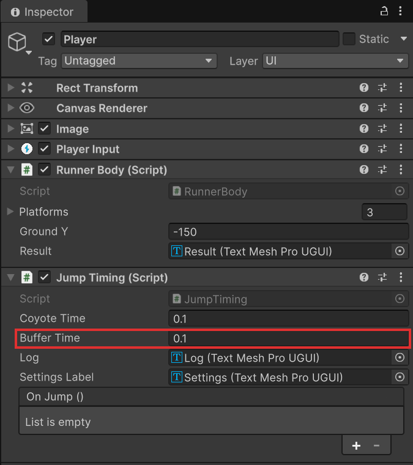
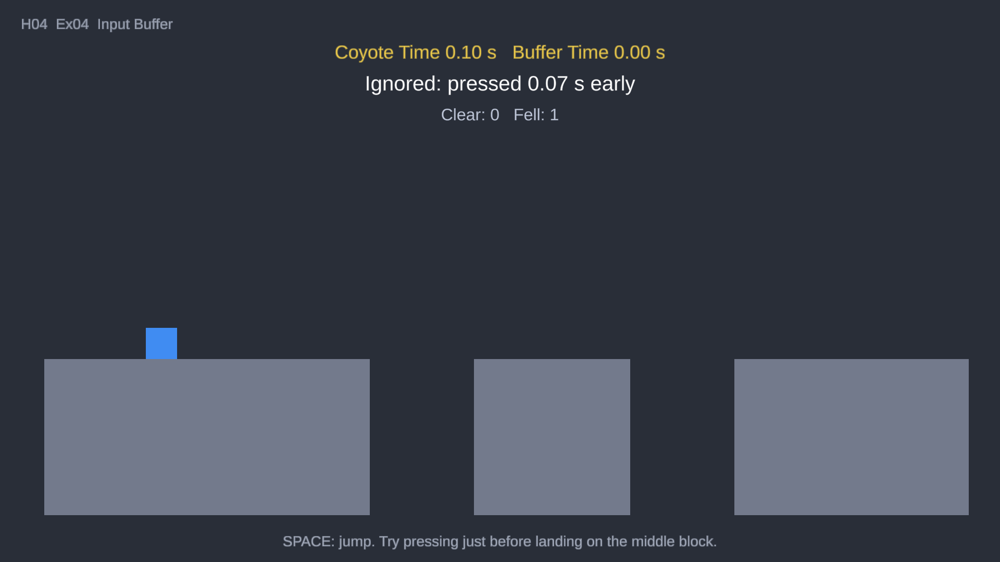
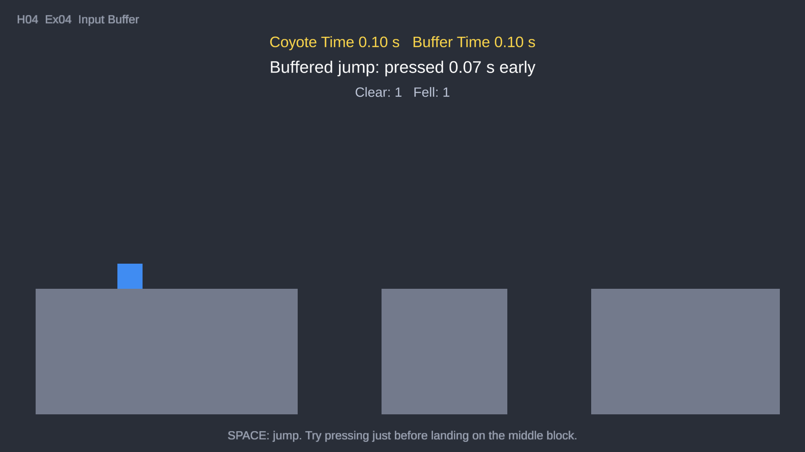
確認：Buffer Time が 0 のとき、着地の 0.07 秒前に押すと Log に「Ignored: pressed 0.07 s early」と出て、着地した後は跳ばずに歩き続け、Result の Fell が 1 増えることを確認します。0.1 にすると、同じ押し方で「Buffered jump: pressed 0.07 s early」と出て、着地の瞬間に跳び、Clear が 1 増えます（数字は押したタイミングで変わります）。
Clear にならないときは、1 回目のジャンプが早すぎて、真ん中の足場に届いていないことがあります。1 つ目の足場の端に近づいてから押します。真ん中の足場に乗れれば、着地の瞬間のジャンプは必ず 3 つ目の足場に届きます。
早すぎる入力は、ミスではなく意図の表明
Buffer Time が 0 のとき、跳んでいる最中に押した Space は、着地したときに捨てられます。プレイヤーは「次も跳ぶ」と決めて押しているのに、着地の瞬間ぴったりに押さないと跳べないので、操作がとても厳しく感じられます。
Buffer Time 0.1 は、着地の 0.1 秒前（50 px 手前）から押したジャンプを覚えておき、着地の瞬間に出す、という意味です。コヨーテタイムは遅い入力を、入力バッファは早い入力を許します。向きが逆なだけで、どちらも小さなずれをミスにしないための値です。
JumpTiming.cs の全文です。Ex03 と Ex04 の Log は、すべてこのスクリプトが出しています。
using TMPro;
using UnityEngine;
using UnityEngine.Events;
using UnityEngine.InputSystem;
/// Space（Jump アクション）を押したとき、いまジャンプしてよいかを決める。
/// - coyoteTime : 足場の端を過ぎた後も、ジャンプを受け付ける秒数（コヨーテタイム）
/// - bufferTime : 着地より前に押したジャンプを覚えておく秒数（入力バッファ）
/// 判定の結果と、何秒ずれていたかを log に出す。
[RequireComponent(typeof(PlayerInput))]
[RequireComponent(typeof(RunnerBody))]
public class JumpTiming : MonoBehaviour
{
public float coyoteTime = 0f;
public float bufferTime = 0f;
public TMP_Text log;
public TMP_Text settingsLabel; // いまの coyoteTime と bufferTime を表示する
public UnityEvent onJump; // ジャンプした瞬間に呼ぶ処理（Ex08 で光と音をつなぐ）
RunnerBody _body;
float _pressedAt = -99f; // ジャンプ中に押した時刻
void Start()
{
_body = GetComponent<RunnerBody>();
_body.Landed += OnLanded;
}
void Update()
{
settingsLabel.text = $"Coyote Time {coyoteTime:0.00} s Buffer Time {bufferTime:0.00} s";
}
void OnJump(InputValue value)
{
float late = Time.time - _body.LeftAt; // 端を過ぎてから何秒たったか
if (_body.Grounded)
Jump("Jump");
else if (_body.WalkedOff && late <= coyoteTime)
Jump($"Coyote jump: {late:0.00} s after the edge");
else if (_body.WalkedOff)
log.text = $"Too late: {late:0.00} s after the edge";
else
_pressedAt = Time.time; // ジャンプ中に押した。着地したときに使う
}
void OnLanded()
{
float early = Time.time - _pressedAt; // 着地の何秒前に押したか
_pressedAt = -99f;
if (early <= bufferTime)
Jump($"Buffered jump: pressed {early:0.00} s early");
else if (early <= 0.3f)
log.text = $"Ignored: pressed {early:0.00} s early";
}
void Jump(string message)
{
_body.Jump();
log.text = message;
onJump.Invoke();
}
}| 部分 | していること |
|---|---|
coyoteTime / bufferTime | Inspector の Coyote Time と Buffer Time です。どちらも秒で、0 なら許しなしです |
public UnityEvent onJump; | 跳んだ瞬間に呼ぶ処理の一覧です。Ex08 では、ここに光・音・揺れをつないでいます |
_body.Landed += OnLanded; | RunnerBody が着地したときに、OnLanded を呼んでもらうように登録します |
void OnJump(InputValue value) | Jump アクション（Space）の受け口です。押されるたびに、次の 4 つの場合に分かれます |
float late = Time.time - _body.LeftAt; | 端を過ぎて落ち始めてから、何秒たったかを計算します。Log の数字はこの値です |
if (_body.Grounded) | 1. 足場の上にいるなら、そのまま跳びます（Jump） |
else if (_body.WalkedOff && late <= coyoteTime) | 2. 歩いて端から落ちている途中でも、Coyote Time 以内なら跳びます（Coyote jump） |
else if (_body.WalkedOff) | 3. Coyote Time を過ぎていたら、跳ばずに Too late と表示します |
else _pressedAt = Time.time; | 4. 跳んでいる最中に押したときは、押した時刻だけを覚えておきます |
void OnLanded() | 着地したときに呼ばれます。early は、覚えていた時刻から着地までの秒数です |
if (early <= bufferTime) | Buffer Time 以内に押していたら、着地の瞬間に跳びます（Buffered jump） |
else if (early <= 0.3f) | 間に合わなかった入力のうち、着地の 0.3 秒前までのものは Ignored と表示します。それより前の入力は何も表示せずに捨てます |
void Jump(string message) | 実際に跳ばせ、Log を書き換え、On Jump () の一覧を呼びます |
跳ぶ動きそのもの（毎秒 500 px で歩く、重力で落ちる、ゴールで Clear・落ちたら Fell を数える）は RunnerBody.cs が受け持っています。動きの土台なので、今日は読まなくてかまいません。配布物の Scripts フォルダに入っているので、気になる人は授業の後に開いてみましょう。
3. 情報の層：反応と理由が伝わるか
この層で守るのは、操作の結果がプレイヤーに伝わることです。押したのに反応が遅れて二度押ししてしまう、ボタンが押せないのに理由が書いていない、という場面では、操作はできても情報が届いていません。
この章では、まず反応をわざと遅らせて、遅れを感じ始める境目を探します。続けて、押せないボタンに理由の一言を添えます。
反応の遅れを比べる
Assets/Lessons/H04_InputFeedback/Scenes/Ex05_FeedbackDelay.unity ／ Canvas / Lamp_Right
前の章では、押すタイミングのずれを許しました。今度は、押した後の反応のほうを遅らせます。
Ex01 のランプを 3 つ並べ、光り始めるまでの遅れ（Delay）だけを、左から 0 秒・0.1 秒・0.3 秒にしました。Space を 1 回押すと、3 つのランプが少しずつずれて光ります。
使うもの
- Lamp_Left・Lamp_Center・Lamp_Right：Delay がそれぞれ 0、0.1、0.3 のランプです。どれも Ex01 と同じ LampFlash.cs で光ります
- Delay：
Flash()が呼ばれてから光り始めるまでの秒数です
手順
- Project ウィンドウで
Ex05_FeedbackDelayをダブルクリックして開きます - Play ボタン（Cmd + P、Windows は Ctrl + P）を押し、Game ビューを 1 回クリックしてから、Space を何回か押します
- 左・中・右のランプが、それぞれいつ光ったかを見比べてから、Play を止めます
- Hierarchy で
Canvasの左の三角を開き、Lamp_Rightをクリックします - Inspector の Lamp Flash の Delay に
0.15を入力し、Enter で確定します - Play を押し、Game ビューを 1 回クリックしてから Space を押して、右のランプの遅れを見ます。確かめたら止めます
- Delay を
0.05に変えて、手順 6 を同じように行います
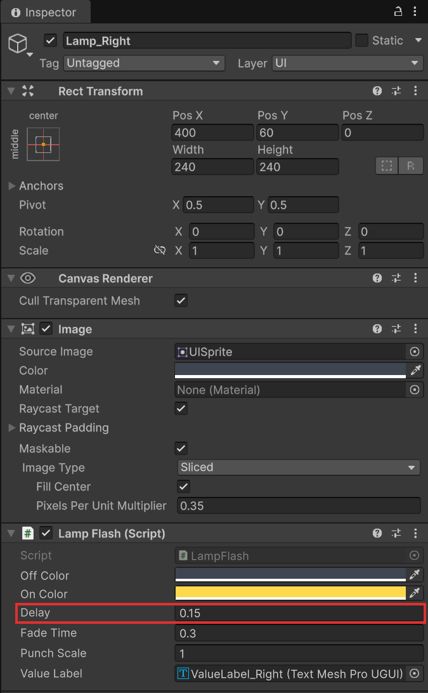
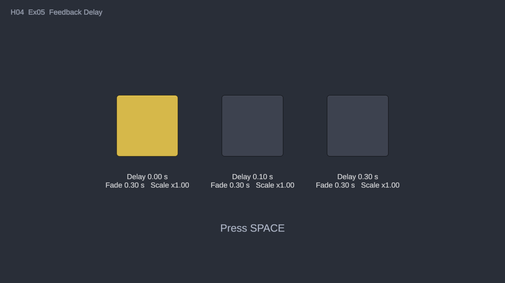
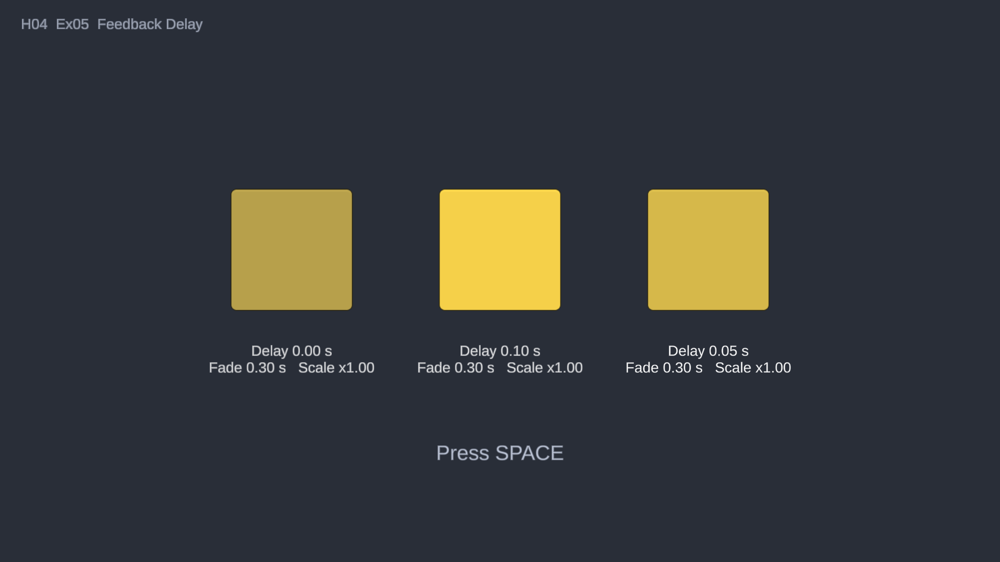
確認：変更前は、左のランプが押した瞬間に光り、右のランプがはっきり遅れて光ることを確認します。右の Delay を 0.15、0.05 と下げると、ランプの下の表示が「Delay 0.15 s」「Delay 0.05 s」に変わり、右のランプの光り方が左に近づいていきます。
0.1 秒が境目と言われる理由
講義 D04 で扱ったように、人は操作から反応までが 0.1 秒を超えると「遅れた」と感じ始めます。今日の中のランプがちょうどこの境目で、右の 0.3 秒ははっきり遅れて見えます。
配布シーンの自動テストで光った時刻を測ると、Delay 0.1 と 0.3 のランプは左のランプより 0.100 秒と 0.300 秒遅れ、右を 0.05 に変えると 0.050 秒の遅れになりました。Inspector の値のとおりに遅れていることが分かります。
反応が遅れると、プレイヤーは押したことが届いたか分からず、二度押しするか、操作をやめてしまいます。どこから遅れを感じるかは人やゲームによって違うので、0.15 と 0.05 を試して、自分の境目を探してみましょう。
押せないボタンに理由を添える
Assets/Lessons/H04_InputFeedback/Scenes/Ex06_LockedReason.unity ／ Canvas / Button_Left
前の作例では反応の速さを扱いました。今度は、反応できないときに何を伝えるかを扱います。
押せない SKILL ボタンが 2 つあり、右だけに「Unlocks at Lv.12」と理由が添えてあります。左にも同じ理由を入れます。
使うもの
- Button_Left・Button_Right：Interactable のチェックを外した（押せない）SKILL ボタンです。H03 の Ex04 と同じ状態です
- LockedReason.cs：押せないボタンの下に理由を表示し、押されたら理由の文字を約 0.6 秒だけ黄色にするスクリプトです
- Reason：押せない理由の文字です。空のままだと何も表示しません
手順
- Project ウィンドウで
Ex06_LockedReasonをダブルクリックして開きます - Play ボタン（Cmd + P、Windows は Ctrl + P）を押します
- Game ビューで右の SKILL ボタンをクリックし、続けて左の SKILL ボタンをクリックします。確かめたら Play を止めます
- Hierarchy で
Canvasの左の三角を開き、Button_Leftをクリックします - Inspector の Locked Reason の Reason に
Unlocks at Lv.12と入力し、Enter で確定します - Play を押し、左の SKILL ボタンをクリックします。確かめたら止めます
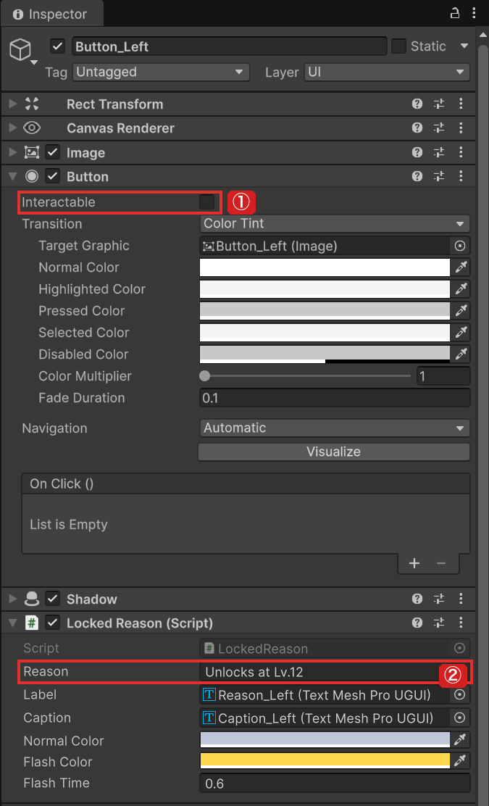
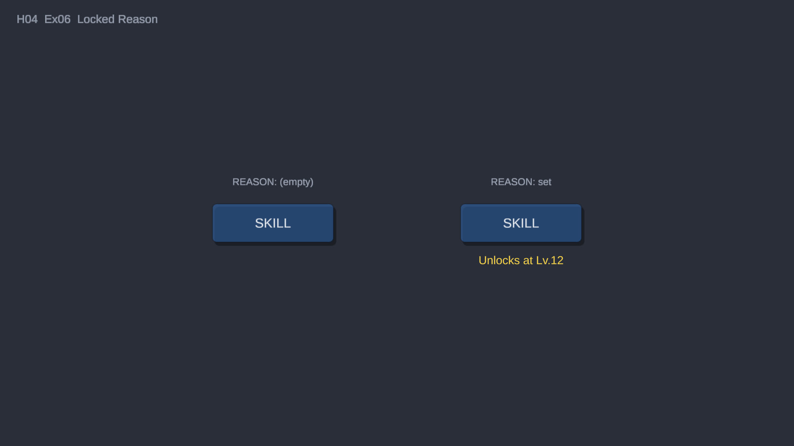
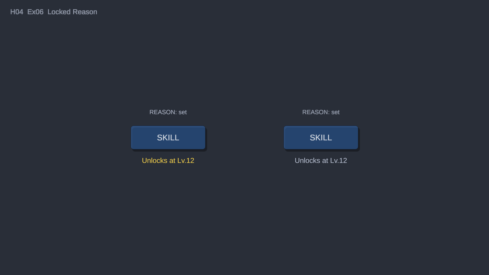
確認：変更前は、右のボタンを押すと「Unlocks at Lv.12」がすぐに黄色になって約 0.6 秒で元の色に戻り、左のボタンを押しても画面には何も表示されないことを確認します。Reason を入れた後は、左のボタンの上の表示が「REASON: (empty)」から「REASON: set」に変わり、左を押しても理由が黄色に光ります。
グレーアウトは理由を語らない
押せないボタンを暗くするのは、講義 D04 でいう制約（constraint）で、いま押しても意味がないことを操作を封じて伝えています。ただし暗いボタンは、なぜ押せないのかまでは教えてくれません。
左のボタンを押しても画面に何も表示されない状態は、プレイヤーを苛立たせます。「Unlocks at Lv.12」と一言添えるだけで、押せない理由が分かり、制約が不満から目標に変わります。押したときに理由を光らせるのは、「理由はここに書いてある」と目を向けさせるための小さなフィードバックです。
LockedReason.cs の全文です。
using TMPro;
using UnityEngine;
using UnityEngine.EventSystems;
using UnityEngine.UI;
/// Interactable をオフにしたボタンに付ける。押せない理由（reason）を label に添える。
/// 押せないボタンを押したときは、理由の文字を flashTime 秒だけ黄色にして「理由はここ」と知らせる。
/// reason が空なら何も表示しない（理由を語らないグレーアウト）。
[RequireComponent(typeof(Button))]
public class LockedReason : MonoBehaviour, IPointerDownHandler
{
public string reason = "";
public TMP_Text label;
public TMP_Text caption; // 理由が入っているかを表示する（REASON: set / (empty)）
public Color normalColor = new Color(0.75f, 0.78f, 0.85f);
public Color flashColor = new Color(1f, 0.85f, 0.3f);
public float flashTime = 0.6f;
Button _button;
float _flashUntil = -1f;
void Start()
{
_button = GetComponent<Button>();
}
// 押した瞬間に呼ばれる（Interactable がオフでも、同じ GameObject のこのスクリプトには届く）
public void OnPointerDown(PointerEventData eventData)
{
if (!_button.interactable)
_flashUntil = Time.time + flashTime;
}
void Update()
{
label.text = reason;
label.color = Time.time < _flashUntil ? flashColor : normalColor;
caption.text = reason == "" ? "REASON: (empty)" : "REASON: set";
}
}| 部分 | していること |
|---|---|
IPointerDownHandler | このスクリプトが「押された瞬間」の知らせを受け取れるようにします。受け取ると OnPointerDown が呼ばれます |
[RequireComponent(typeof(Button))] | Button と同じ GameObject に付けて使うスクリプトであることを示します |
public string reason = ""; | Inspector の Reason です。空なら理由を表示しません |
flashColor / flashTime | 押されたときの黄色と、黄色にしておく秒数（0.6 秒）です |
public void OnPointerDown(...) | ボタンが押された瞬間に呼ばれます。Interactable がオフのときだけ、黄色にする終わりの時刻を「いま + flashTime」にします |
label.text = reason; | ボタンの下の文字に、いまの Reason を毎フレーム入れます。Inspector で変えるとすぐに表示が変わります |
label.color = Time.time < _flashUntil ? ... | 終わりの時刻までは黄色、過ぎたら元の色にします |
caption.text = reason == "" ? ... | 理由が入っているかどうかを、ボタンの上に「REASON: (empty)」か「REASON: set」で表示します |
Interactable をオフにした Button は、クリックされても On Click () を呼びません。ただし押された知らせ自体は同じ GameObject のスクリプトに届くので、LockedReason はそれを使って理由を光らせています。
4. 見た目の層：手応えの長さを作り分ける
この層で守るのは、反応の見え方・聞こえ方・感じ方が、操作に見合っていることです。軽く押しただけなのに長く大きく揺れる、という場面では、反応はあっても「操作が届いた」のか「何かが起きた」のかが区別できません。
この章では、光・音・揺れの長さを並べて、操作への手応えと通知を押し比べます。最後に、ここまでの許しと手応えを重ねた作者の一例を見ます。
手応えと通知を押し比べる
Assets/Lessons/H04_InputFeedback/Scenes/Ex07_LightSound.unity ／ Canvas / TapLamp
前の章では、反応の速さと、反応できないときの伝え方を扱いました。今度は、反応がどれだけ続くかを扱います。
Ex01 のランプに、短い音と短い揺れを足したものが左の TAP です。右の NOTIFY は、電話の呼び出しのように長い音と長い揺れを返します。左の手応えの揺れの長さ（Duration）を、右の通知と同じ 0.8 秒にします。
使うもの
- TapLamp（左、Space）：光って少し膨らみ、880 Hz（Hz は 1 秒に震える回数）の高い音を 0.05 秒鳴らし、0.06 秒揺れるランプです
- Phone（右、N）：220 Hz の低い音を 0.8 秒鳴らし、0.8 秒揺れる「CALL」の板です
- BeepSound.cs：音のファイルを使わず、決めた高さと長さの電子音をその場で作って鳴らすスクリプトです
- Rumble.cs：決めた長さ（Duration）と強さ（Strength）で揺らすスクリプトです。ゲームパッドがあればモーターを回し、画面の部品も小刻みに動かします
- 長さの棒：揺れの長さを棒で見せます。棒いっぱい（500 px）が 1 秒です
手順
- Project ウィンドウで
Ex07_LightSoundをダブルクリックして開きます - Play ボタン（Cmd + P、Windows は Ctrl + P）を押し、Game ビューを 1 回クリックしてから、Space を数回押します（音が出ます）
- N を 1 回押し、揺れの長さと、下の棒の長さを左右で見比べます。確かめたら Play を止めます
- Hierarchy で
Canvasの左の三角を開き、TapLampをクリックします - Inspector の Rumble の Duration に
0.8を入力し、Enter で確定します - Play を押し、Game ビューを 1 回クリックしてから Space を押して、揺れと棒を見ます。確かめたら止めます
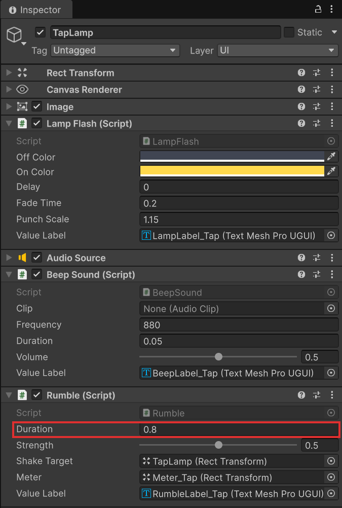
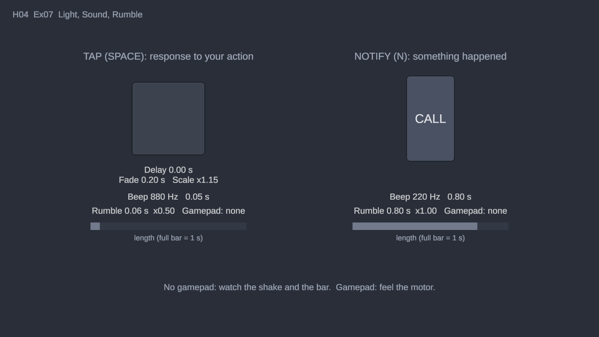
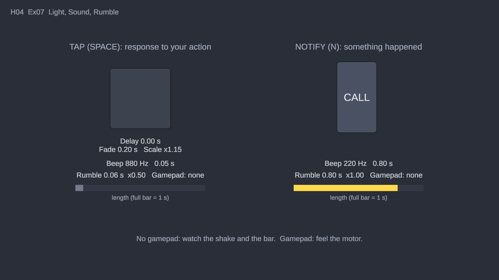
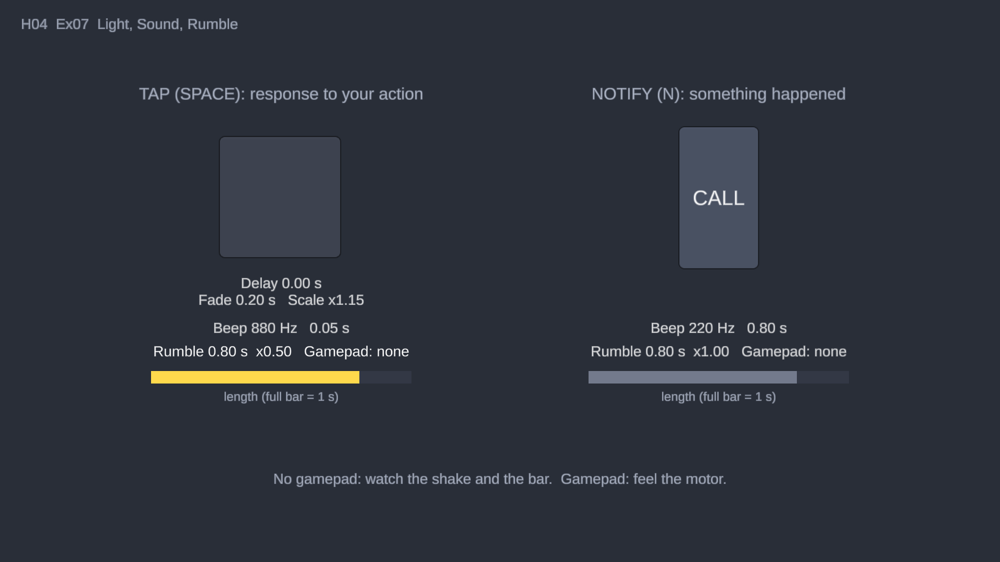
| TAP（Space） | NOTIFY（N） | |
|---|---|---|
| 光 | 光って 1.15 倍に膨らみ、0.2 秒で戻る | なし |
| 音 | 880 Hz（高い）、0.05 秒 | 220 Hz（低い）、0.8 秒 |
| 揺れ | 0.06 秒、強さ 0.5（画面では最大 6 px） | 0.8 秒、強さ 1.0（画面では最大 12 px） |
| 長さの棒 | 30 px | 400 px |
確認：変更前は、Space の揺れと音が一瞬で止み、N の揺れと音が長く続くことを確認します。TapLamp の Duration を 0.8 にすると、左の表示が「Rumble 0.80 s x0.50」になり、棒が 30 px から 400 px に伸びて、Space を押しても揺れが 0.8 秒続きます。
ゲームパッドが無いときは、画面の揺れと棒で長さの違いを見ます。ゲームパッドをつなぐと、表示が「Gamepad: none」から「Gamepad: connected」に変わり、パッドの下のボタン（Button South）が Space、上のボタン（Button North）が N と同じ働きをして、手でもモーターの振動を感じられます。通知が鳴っている間に手応えを押しても、通知の振動は最後まで続きます。
手応えは短く、通知は長く
講義 D04 では、着信のバイブレーションとキーを打ったときの「コツッ」を比べました。通知は「何かが起きた」と向こうから知らせるもので、長く強く震えます。操作への手応え（フィードバック）は「あなたの操作が届いた」と確かめさせるもので、押した瞬間に短く返り、すぐに止みます。
TapLamp の Duration を 0.8 にすると、操作は同じ Space なのに、揺れは通知と同じ長さになります。押すたびに 0.8 秒揺れ続けると、自分の操作への返事というより、何かが起きた知らせのように感じられるはずです。長さと強さで、2 つを作り分けます。
スマートフォンでは、Unity 標準の Handheld.Vibrate() で端末を震わせられます。ただしこの機能はモバイル専用で、長さも強さも指定できず、振動の長さは OS が決めます。鳴らせるのは通知寄りの振動なので、今日の PC の演習では使わず、ゲームパッドのモーターと画面の揺れで長さと強さの違いを体験しました。
BeepSound.cs の全文です。音のファイルを用意しなくても鳴るように、音をその場で作っています。
using TMPro;
using UnityEngine;
/// Play() で短い電子音を鳴らす。音は実行時に作るので、音のファイルを用意しなくてよい。
/// - frequency : 音の高さ（Hz）。880 は高め、220 は低め
/// - duration : 音の長さ（秒）
/// clip に音のファイルを入れた場合は、作った音ではなくそちらを鳴らす。
[RequireComponent(typeof(AudioSource))]
public class BeepSound : MonoBehaviour
{
public AudioClip clip;
public float frequency = 880f;
public float duration = 0.05f;
[Range(0f, 1f)] public float volume = 0.5f;
public TMP_Text valueLabel; // 入れておくと、いまの高さと長さを表示する
void Update()
{
if (valueLabel != null)
valueLabel.text = $"Beep {frequency:0} Hz {duration:0.00} s";
}
public void Play()
{
var sound = clip != null ? clip : MakeBeep();
GetComponent<AudioSource>().PlayOneShot(sound, volume);
}
// サイン波を duration 秒ぶん並べる。終わりに向けて小さくし、「プツッ」という音を防ぐ
AudioClip MakeBeep()
{
int rate = AudioSettings.outputSampleRate;
int length = Mathf.Max(1, Mathf.RoundToInt(rate * duration));
var data = new float[length];
for (int i = 0; i < length; i++)
{
float fade = 1f - (float)i / length;
data[i] = Mathf.Sin(2f * Mathf.PI * frequency * i / rate) * fade;
}
var beep = AudioClip.Create("Beep", length, 1, rate, false);
beep.SetData(data, 0);
return beep;
}
}| 部分 | していること |
|---|---|
[RequireComponent(typeof(AudioSource))] | 音を鳴らす部品（Audio Source）と同じ GameObject で使います |
frequency / duration / volume | 音の高さ（Hz）、長さ（秒）、大きさ（0〜1）です。880 Hz は 1 秒に 880 回震える高めの音、220 Hz はその 4 分の 1 の低めの音です |
public void Play() | clip に音のファイルが入っていればそれを、無ければ作った音を 1 回鳴らします |
AudioSettings.outputSampleRate | 1 秒あたりの音の点の数です。たとえば 48000 なら、0.05 秒の音は 2400 個の点でできます |
Mathf.Sin(...) * fade | なめらかな波（サイン波）を並べ、終わりに向けて少しずつ小さくします。急に途切れたときの「プツッ」という音を防ぐためです |
AudioClip.Create(...) / SetData | 並べた点から、鳴らせる音（AudioClip）を作ります |
Rumble.cs の全文です。
using System.Collections.Generic;
using TMPro;
using UnityEngine;
using UnityEngine.InputSystem;
using UnityEngine.UI;
/// Play() で、duration 秒だけ揺らす。
/// - ゲームパッドがつながっていれば、モーターを strength（0〜1）の強さで回す
/// - 画面でも shakeTarget を小刻みに動かす（最大 strength × 12 px）。パッドが無くても違いが見える
/// - meter（棒）の長さで duration を見せる（1 秒 = 500 px）。揺れている間は棒が黄色く光る
/// 通知（長く強く）と、操作への手応え（短く弱く）を、duration と strength で比べる。
/// モーターは 1 台なので、いくつかの Rumble が同時に揺れているときは一番強いものに合わせ、全部が止まったら 0 にする。
public class Rumble : MonoBehaviour
{
public float duration = 0.06f;
[Range(0f, 1f)] public float strength = 0.5f;
public RectTransform shakeTarget;
public RectTransform meter;
public TMP_Text valueLabel;
static readonly Color IdleColor = new Color(0.45f, 0.48f, 0.55f);
static readonly Color ActiveColor = new Color(1f, 0.85f, 0.3f);
// いま揺れている Rumble の一覧（static なので、すべての Rumble で 1 つを共有する）
static readonly List<Rumble> s_Playing = new List<Rumble>();
Vector2 _home;
float _endAt = -1f; // 揺れを止める時刻（-1 = 揺れていない）
public bool IsPlaying => _endAt >= 0f;
// ドメインの再読み込みを省いて Play したとき（Enter Play Mode Options）も、前回の一覧を残さない
[RuntimeInitializeOnLoadMethod(RuntimeInitializeLoadType.SubsystemRegistration)]
static void ClearPlaying()
{
s_Playing.Clear();
}
void Start()
{
if (shakeTarget != null)
_home = shakeTarget.anchoredPosition;
}
public void Play()
{
_endAt = Time.time + duration;
if (!s_Playing.Contains(this))
s_Playing.Add(this);
ApplyMotor();
}
void Update()
{
if (meter != null)
{
meter.sizeDelta = new Vector2(duration * 500f, meter.sizeDelta.y);
meter.GetComponent<Image>().color = IsPlaying ? ActiveColor : IdleColor;
}
if (valueLabel != null)
valueLabel.text = $"Rumble {duration:0.00} s x{strength:0.00} Gamepad: {(Gamepad.current != null ? "connected" : "none")}";
if (!IsPlaying)
return;
if (Time.time < _endAt)
{
if (shakeTarget != null)
shakeTarget.anchoredPosition = _home + Random.insideUnitCircle * (strength * 12f);
return;
}
Stop();
}
void Stop()
{
_endAt = -1f;
if (shakeTarget != null)
shakeTarget.anchoredPosition = _home;
s_Playing.Remove(this);
ApplyMotor();
}
// 揺れている Rumble のうち、一番強い strength でモーターを回す。1 つも揺れていなければ 0（止める）
static void ApplyMotor()
{
if (Gamepad.current == null)
return;
float strongest = 0f;
foreach (var rumble in s_Playing)
strongest = Mathf.Max(strongest, rumble.strength);
Gamepad.current.SetMotorSpeeds(strongest, strongest); // 低い周波数と高い周波数のモーター
}
// Play を止めたとき・シーンを切り替えたときに振動が残らないようにする（一覧から外して送り直す）
void OnDisable()
{
Stop();
}
}| 部分 | していること |
|---|---|
duration / strength | Inspector の Duration（揺らす秒数）と Strength（強さ、0〜1）です |
shakeTarget / meter | 画面で揺らす部品と、長さを見せる棒です。棒の長さは duration * 500f なので、0.06 秒は 30 px、0.8 秒は 400 px になります |
static readonly List<Rumble> s_Playing | いま揺れている Rumble の一覧です。static を付けた変数は、すべての Rumble で 1 つを共有します |
static void ClearPlaying() | Play を始めるときに一覧を空にします。前回の Play の一覧が残らないようにするためです |
public void Play() | 止める時刻を「いま + duration」にし、自分を一覧に足してから、モーターの強さを決め直します |
Random.insideUnitCircle * (strength * 12f) | 揺れている間、部品を元の位置から最大で strength × 12 px だけ毎フレームずらします。強さ 0.5 なら 6 px、1.0 なら 12 px です |
void Stop() | 部品を元の位置に戻し、自分を一覧から外してから、モーターの強さを決め直します |
static void ApplyMotor() | 一覧の中で一番強い strength でモーターを回し、一覧が空なら 0（止める）を送ります。モーターは 1 台なので、TAP と NOTIFY が重なっても、通知の振動が途中で止まらないようにしています |
Gamepad.current | いまつながっているゲームパッドです。つながっていなければ null で、モーターには何も送りません |
void OnDisable() | Play を止めたときやシーンを切り替えたときに、振動が残らないように止めます |
やってみよう：自分のジャンプに許しと手応えを足す
Assets/Lessons/H04_InputFeedback/Scenes/Ex08_Example.unity ／ Canvas / Stage / Player
前の作例の短い手応えを、Ex04 のジャンプに重ねた作者の一例です。Coyote Time と Buffer Time はどちらも 0.1 で、跳んだ瞬間に四角が白く光って膨らみ、短い音が鳴り、足場ごと画面が小さく揺れます。
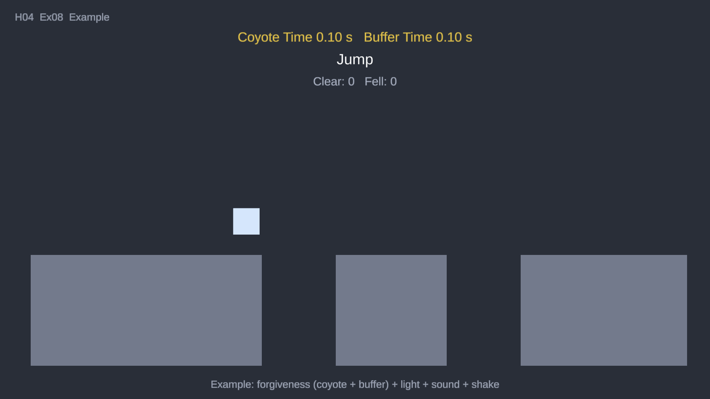
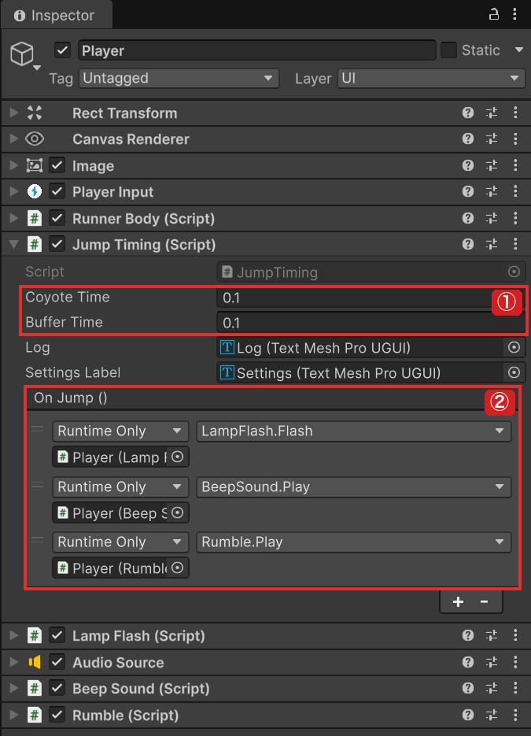
確認：Ex08_Example を開いて Play し、Game ビューを 1 回クリックしてから Space で跳ぶと、跳ぶたびに四角が白く光って膨らみ、短い音が鳴り、足場ごと画面が小さく揺れることを確認します。
| 観点 | この例での作り方 |
|---|---|
| 許し | Jump Timing の Coyote Time と Buffer Time を、どちらも 0.1 にしています |
| 光 | Player に Lamp Flash を付け、Off Color を青、On Color を白、Fade Time を 0.15、Punch Scale を 1.25 にしています |
| 音 | Beep Sound の Frequency を 660、Duration を 0.06 にしています |
| 揺れ | Rumble の Duration を 0.05、Strength を 0.4 にし、Shake Target に Stage を入れて、足場ごと画面を最大 4.8 px 揺らしています |
| 長さ | 光は 0.15 秒、音は 0.06 秒、揺れは 0.05 秒で、どれも操作への手応えとして短く止まります |
これを参考に、Ex03 や Ex04 の Player を自分のジャンプに見立てて、許しを足す直し方と、手応えを 1 つ足す直し方を試してみましょう。手応えを長くしすぎると、Ex07 で見たように通知のように感じられることもあるので、長さを変えながら押し比べると違いがよく分かります。
5. 許しと手応えを設計してきた現場
今日はジャンプ 1 回、ボタン 1 つの反応を扱いましたが、ゲームの作り手は同じことを数字と指針にして積み重ねてきました。この章では、原理編 第4章で紹介されている事例から 3 つを取り上げます。
許しを数字にする：『Celeste』とフォーギブネス
公開されている『Celeste』のソースコードでは、コヨーテタイムが 0.1 秒に設定されています。今日の Ex03 で入れた 0.1 は、この値です。足場を離れた直後に押したジャンプも、ミスにしないための値と言えます。
セス・コスター（Seth Coster）さんは、この種の調整をフォーギブネス（forgiveness）と呼び、GDC で一本の講演にまとめています。プレイヤーの入力を額面どおりに処理せず意図を汲む、という考え方で、数フレーム早いジャンプはミスではなく意図の表明だとしています。
Ex03 と Ex04 で入れた値は、機械の正しさよりもプレイヤーの意図を優先する値でした。同じ 0.1 秒でも、入れるかどうかで「押したのに跳べなかった」という不満が生まれるかどうかが変わります。
フィードバックはご褒美である前に情報：Game Feel の講演
ニコラエ・ベルベチェ（Nicolae Berbece）さんは、GDC Europe 2015 の講演「Game Feel: Why Your Death Animation Sucks」で、キャラクターが倒れる一瞬を題材に、コードの一行目から効果音、画面の揺れ、パーティクルまでを順に足していきました。反応の良さと見せ方で、体感がどう変わるかを実演した講演です。
原理編では、ここから「フィードバックは、ご褒美である前に情報」という点を押さえています。派手にすることが目的ではなく、操作が世界に届いたという事実を、確実に、即座に知らせることが先にあり、その上で気持ちよさの演出が乗ります。今日の Ex05 の遅れと Ex07 の光・音・揺れは、この順序で見ると理解しやすくなります。
触覚の使い分け：iOS と Android の指針
スマートフォンのキーボードを打ったときの小さな感触は、ハプティクス（haptics）と呼ばれる、触覚でフィードバックを返す仕組みです。iOS の API（プログラムから呼び出せる機能の窓口）には、ものがぶつかったり、はまり込んだりする瞬間に使う Impact、選択が切り替わったときの Selection、成功・警告・失敗を伝える Notification といった種類が用意されています。
Android の開発者向け指針は、スクロールのように頻繁に起きることには弱い効果を、送信の確定のような重要なことには強い効果を割り当てるよう勧めています。同じ指針は、しびれが残るような雑な振動（buzzy haptics）しか出せないなら、触覚は付けないほうがよいとまで書いています。
Unity でこうした手応えを返すには、Handheld.Vibrate() ではなく、iOS の UIImpactFeedbackGenerator や Android の performHapticFeedback を、ネイティブプラグイン（OS の機能を直接呼ぶための追加の部品）を通して呼ぶことになります。雑な反応は、反応が無いよりも悪いことがある、と覚えておくと、Ex07 の長さと強さを決めるときの手がかりになります。
出典：原理編『UnityDesignPrinciples』第4章。対応付け・制約・フィードバックの枠組みは D. A. ノーマン『誰のためのデザイン？』、講演は Nicolae Berbece "Game Feel: Why Your Death Animation Sucks"（GDC Europe 2015）、触覚の指針は Android Developers の "Haptics design principles" と Apple の Human Interface Guidelines "Playing haptics" によります。
6. まとめ
今日は、キーを押してからスクリプトが動くまでの道筋を確かめ、その上で、操作にどう応えるかを三つの層に分けて、別々の値で調整しました。
- 準備（Player Input・H04Controls・Send Messages）：キーとアクションを結ぶのは H04Controls だけで、スクリプトは「On + アクション名」のメソッドでアクションの名前だけを受け取ります。キーを変えてもパッドをつないでも、スクリプトはそのままで動きます。
- 体験の層（Crossed・Coyote Time・Buffer Time）：プレイヤーが思ったとおりに動くことを守りました。対応付けがずれると、機能は同じでも覚えるコストをプレイヤーが払います。遅い入力はコヨーテタイムで、早い入力は入力バッファで、0.1 秒（50 px）ぶん許しました。
- 情報の層（Delay・Reason）：操作の結果が伝わることを守りました。反応は 0.1 秒を超えると遅れて感じ始めます。押せないボタンには、理由の一言を添えます。
- 見た目の層（Duration・Strength）：反応が操作に見合うことを守りました。操作への手応えは短く、通知は長くして、光・音・揺れの長さで「届いた」と「起きた」を作り分けます。
Inspector で変えた値は、どれも「操作したことに、どう応えるか」を決めるための数字でした。目安はどれも 0.1 秒前後に集まっていたので、自分のゲームでも、まず 0.1 秒から試して押し比べると、直す場所が見つかりやすくなります。